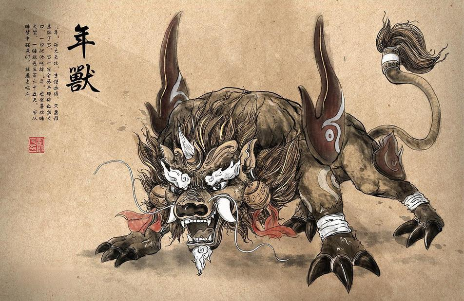

春节，又称中国农历新年，是中国传统的重要节日之一。它是以农历正月初一为起点，持续15天，直到正月十五元宵节结束。春节是中国最重要的传统节日，也是中国家庭团聚、亲朋好友相聚的日子。
春节的由来与中国的传统文化和农耕文明息息相关。相传，在古代，有一种凶猛的怪兽叫做“年兽”，每逢农历年末，年兽就会出现，伤害人畜。人们发现年兽害怕红色、火光和响声，于是便在除夕夜贴红纸、点燃爆竹，以驱赶年兽。
另一个传说是关于年夜饭的起源。相传，年夜饭起源于古代的“除夕守岁”。人们在除夕夜守夜，以驱散灾祸，祈求来年平安顺利。为了让家人能够聚在一起守岁，人们准备了丰盛的晚餐，这就是年夜饭的由来。
随着时间的推移，春节逐渐成为了一个庆祝新年、祭祀祖先、拜访亲友的节日。人们会进行各种传统习俗和活动，如贴春联、放鞭炮、舞龙舞狮、赏花灯等，以庆祝新年的到来。
传说中，很久以前，在一个山脚下，有一个村子。而在山顶的洞里，住着一个专门吃人的怪兽，叫“年”。每到春节的夜晚，这个可怕的怪兽就会到村子里吃人，天上的神仙知道了这件事，就下凡来帮村民们解难。
他告诉村民，怪兽很怕红色的东西还有响声。又一年的春节到了，村民们很担心，怕这个方法行不通，但还是试着做了。怪兽来了，村民们按照这个方法做了，在房子上贴上红纸，穿上红衣，拿出各种红色的东西，并制造出各种响声。没想到，怪兽真的被吓跑了。从此，村民们又过上了幸福美满的生活。而这个方法慢慢流传下来，也有了“过年”这个词。
春节挂贴年画在城乡也很普遍，浓黑重彩的年画给千家万户平添了许多兴旺欢乐的喜庆气氛。年画是我国的一种古老的民间艺术，反映了人民朴素的风俗和信仰，寄托着他们对未来的希望。
2、守岁除夕守岁是最重要的年俗活动之一，守岁之俗由来已久。最早记载见于西晋周处的《风土志》：除夕之夜，各相与赠送，称为“馈岁”;酒食相邀，称为“别岁”;长幼聚饮，祝颂完备，称为“分岁”;大家终夜不眠，以待天明，称曰“守岁”。
3、吃饺子民间春节吃饺子的习俗在明清时已有相当盛行。饺子一般要在年三十晚上12点以前包好，待到半夜子时吃，这时正是农历正月初一的伊始，吃饺子取“更岁交子”之意，“子”为“子时”，交与“饺”谐音，有“喜庆团圆”和“吉祥如意”的意思。
4、放爆竹中国民间有“开门爆竹”一说。即在新的一年到来之际，家家户户开门的第一件事就是燃放爆竹，以哔哔叭叭的爆竹声除旧迎新。爆竹是中国特产，亦称“爆仗”、“炮仗”、“鞭炮”。
5、扫尘“腊月二十四，掸尘扫房子”，据《吕氏春秋》记载，我国在尧舜时代就有春节扫尘的风俗。按民间的说法：因“尘”与“陈”谐音，新春扫尘有“除陈布新”的涵义，其用意是要把一切穷运、晦气统统扫出门。这一习俗寄托着人们破旧立新的愿望和辞旧迎新的祈求。
6、拜年拜年新年的初一，人们都早早起来，穿上最漂亮的衣服，打扮得整整齐齐，出门去走亲访友，相互拜年，恭祝来年大吉大利。拜年的方式多种多样，有的是同族长带领若干人挨家挨户地拜年;有的是同事相邀几个人去拜年;也有大家聚在一起相互祝贺，称为“团拜”。
在民间，新年前夕有“腊月二十四，扫尘(亦称扫屋)的习俗。民谚称“二十四，扫房子”。民间称做“扫尘日”。扫尘就是年终大扫除，家家户户都要打扫环境，清洗各种器具，拆洗被褥窗帘，洒扫六闾庭院，掸拂尘垢蛛网，疏浚明渠暗沟。到处洋溢着欢欢喜喜搞卫生、干干净净迎新春的欢乐气氛。按民间的说法：因“尘”与“陈”谐音，年前扫尘有“除陈布新”的涵义。扫尘用意是要把一切穷运、晦气统统扫出门，以祈来年清吉。
2、贴春联春联也叫门对、春贴、对联、对子、桃符等，它以工整、对偶、简洁、精巧的文字描绘时代背景，抒发美好愿望，是我国特有的文学形式。每逢春节，家家户户都会贴上对联，庆祝新年的到来。
3、办年货拜年新年的初一，人们都早早起来，穿上最漂亮的衣服，打扮得整整齐齐，出门去走亲访友，相互拜年，恭祝来年大吉大利。拜年的方式多种多样，有的是同族长带领若干人挨家挨户地拜年;有的是同事相邀几个人去拜年;也有大家聚在一起相互祝贺，称为“团拜”。
4、祭祖新年最重要的一件事就是祭祖，也是中国人的传统习俗。因为中国地大物博，每个地方祭祖的形式也不同，有的是去野外扫墓，有的是祠堂叩拜，不管形式如何，这都是怀念故人。
5、年夜饭年夜饭，又称年晚饭、团年饭、团圆饭等，特指岁末除夕的阖家聚餐。年夜饭源于古代的年终祭祀仪，拜祭神灵与祖先后团圆聚餐。年夜饭是年前的重头戏，不但丰富多彩，而且很讲究意头。吃团年饭前先拜神祭祖，待拜祭仪式完毕后才开饭。席上一般有鸡(寓意有计)、鱼(寓意年年有余)、蚝豉(寓意好市)、发菜(寓意发财)、腐竹(寓意富足)、莲藕(寓意聪明)、生菜(寓意生财)、生蒜(寓意会计算)、腊肠(寓意长久)等以求吉利。中国人的年夜饭是家人的团圆聚餐，这顿是年尾最丰盛、最重要的一顿晚餐。
6、守岁除夕守岁，有的地方(豫西)叫“熬年”，也是最重要的春节活动之一，守岁含有两层意思：年长者守岁为“辞旧岁”，有珍爱光阴的意思;年轻人守岁，是为延长父母寿命。最早记载见于西晋周处的《风土志》：除夕之夜，各相与赠送，叫“馈岁”;酒食相邀，叫“别岁”;长幼聚饮，祝颂完备，叫“分岁”;大家终夜不眠，以待天明，叫“守岁”。这种习俗后来逐渐盛行，到唐朝初期，唐太宗李世民写有《守岁》诗：“暮景斜芳殿，年华丽绮宫。寒辞去冬雪，暖带入春风。阶馥舒梅素，盘花卷烛红。共欢新故岁，迎送一宵中。”直到今天，人们还习惯在除夕之夜守岁迎新。全国多数地方守岁，女的包饺子、洗菜、准备大年初一的饭菜，或者准备全家的新衣服，男的打扑克牌、麻将，或者喝酒娱乐至天亮，或者一家人一起看春节联欢晚会节目。
7、压岁钱压岁钱是春节前晚辈及小孩子梦寐以求的大事。压岁钱也叫“压岁钱”“压祟钱”“压胜钱”“压腰钱”。除夕吃完年夜饭，由尊长或一家之主向晚辈分赠钱币，并用红线穿编铜钱成串，挂在小儿胸前，说是能够压邪驱鬼。清代富察敦崇《燕京岁时记》中说：“以彩绳穿钱，编作龙形，置于床脚，谓之压岁钱。尊长之赐小儿者，亦谓之压岁钱。”这个习俗自汉魏六朝开始流行。《宣和博古图录》中记载：“钱形长而方，上面龙马并著，俗谓佩此能驱邪镇魅。”因为“岁”与“祟”谐音，“压岁”即“压祟”，所以称为“压岁钱”。因为是守岁夜给钱，所以又称“守岁钱”。
8、燃放爆竹“爆竹声中一岁除，春风送暖入屠苏。千门万户曈曈日，总把新桃换旧符。”宋朝政治家王安石的这首诗也提到了春节燃放爆竹，可见春节燃放爆竹的习俗由来已久了。在春节到来之际，家家户户开门的第一件事就是燃放爆竹，以噼里啪啦的爆竹声除旧迎新。爆竹亦称“炮仗”“鞭炮”“炮”等。
9、拜年大年初一清早，大人小孩穿着节日的盛装，出门走亲访友，相互拜年，恭祝新年大吉大利。拜年一般从家里开始。初一早晨晚辈起床后，先向长辈拜年，祝福长辈健康长寿，万事如意。家中拜完年后，人们外出相遇时也要笑容满面地恭贺新年，相互道“恭喜发财”“新年快乐”“四季平安”等吉言。
10、逛庙会一提起逛庙会，就会想起北京春节的庙会，厂甸庙会、白云观庙会、莲花池庙会，人们蜂拥而至，处处交通堵塞，闹市区实行交通管制。庙会又叫“妙会”“庙市”或“节场”。早期庙会仅是一种隆重的祭祀活动，随着经济的发展和人们交流的需要，庙会在保持祭祀活动的同时，逐渐融入集市交易活动。随着人们的需要，又在庙会上增加丰富多彩的活动。于是过年逛庙会就成为人们不可或缺的娱乐活动。部分地区，每年的庙会宗教色彩越来越淡化，只有娱乐性的仿祭祀活动表演，更多的是“有会无庙”，公园、体育场、商场等都成了庙会的举办场所。庙会也就渐渐地演化成为集娱乐和短期的集市交易为一体的民间活动。
11、舞龙舞龙又称“龙舞”“龙灯舞”“舞龙灯”等。龙是传说中的神奇动物，能在天上呼风唤雨，也能为人间隆福消灾。早在汉代就有舞龙祈雨的活动。当时四季祈雨，春舞青龙，夏舞赤龙或黄龙，秋舞白龙，冬舞黑龙。舞龙时，锣鼓喧天，爆竹齐鸣，场面十分热烈。每一个动作都有名号，诸如：“二龙戏珠”“二龙出水”“黄龙过江”“白龙出洞”“穿越龙桥”“打草惊蛇”“银龙翻江”“金龙倒海”“海底捞月”。如果两队舞龙相遇，一定大摆龙门阵，争夺高下。有的地方，败北者一方要为胜者一方奏锣鼓、放鞭炮。云南、贵州的苗族，每年正月初一至十五舞龙，同时家家户户堂屋神桌上摆糯米糍粑和酒肉，点燃香纸蜡烛，敬奉“金角老龙”，含有欢庆丰年、祈求吉祥的意思。
12、舞狮舞狮子活动在河南豫西一带称作耍狮子。耍狮子活动比较经典的动作有：狮子蹦上高桌、狮子过独木桥、狮子翻跟头。广东海丰盛行春节“听鼓手、看舞狮、听唱曲”。舞狮主要有麒麟、狮、客仔狮、外江狮四种，唱区主要有西秦曲、白字曲、潮州曲等多种。鼓手就是唢呐，也叫大笛或吹班。每班由二人吹大笛，一人打铜钹，一人打小鼓。一般从除夕下午就开始到商铺里去吹打，一直到初三、初四才停止。初一、初二最热闹。舞狮子的队伍挨家挨户舞弄，到了人家门前，说声“恭喜”之后就开始吹奏起来，直到主人掏出红包，带队的拿到红包才离去，紧接着到下一家去舞狮。
13、踩高跷踩高跷娱乐活动历史悠久。表演者双脚绑扎木制1～3尺高的跷棍，扮演成各种滑稽人物表演古怪动作。踩高跷，北京称作高跷或高跷会，陕西、甘肃、河南等黄河流域称作“扎高脚”。踩高跷有文跷、武跷两种活动之分。文跷以边走边唱为主，夹杂有简单的舞扭动作，武跷则表演倒立、跳高桌、叠罗汉、劈叉等高难度动作。